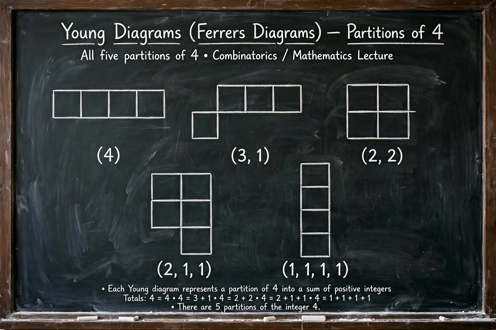

Partition function (number theory)
| Partition function p(n) | |
|---|---|
 | |
| p(1)…p(5) | 1, 2, 3, 5, 7 |
| p(100) | 190,226,358 |
| Exact formula | Rademacher (1937) |
| Field | Number theory, combinatorics |
In number theory, the partition function p(n) represents the number of possible partitions of a non-negative integer n — that is, the number of ways of writing n as a sum of positive integers, irrespective of order. For example, p(4) = 5 because 4 can be written as 4, 3+1, 2+2, 2+1+1, and 1+1+1+1. By convention p(0) = 1 and p(n) = 0 for negative n.
Generating function
Leonhard Euler showed that the generating function of p(n) is the infinite product
Σ p(n) xn = Πk≥1 1/(1 − xk),
and derived a recurrence using his pentagonal number theorem, which allowed p(n) to be computed for n up to 200 by hand.
Asymptotics and the Hardy–Ramanujan formula
In 1918 G. H. Hardy and Srinivasa Ramanujan obtained the celebrated asymptotic formula
p(n) ~ eπ√(2n/3) / (4n√3),
using the circle method they developed for the purpose. Hans Rademacher later refined their divergent asymptotic series into an exact convergent series (1937). Hardy and Ramanujan's work also produced the famous story of p(200) ≈ 3.97 × 1031 computed by Major MacMahon by hand and checked against the formula.
Congruences and modern developments
Ramanujan discovered striking congruences such as p(5n+4) ≡ 0 (mod 5), p(7n+5) ≡ 0 (mod 7) and p(11n+6) ≡ 0 (mod 11), later explained through the theory of modular forms. In 2011 Ken Ono and collaborators announced a finite algebraic formula for p(n) describing its behaviour along arithmetic progressions, resolving questions about the fractal structure of the partition function.